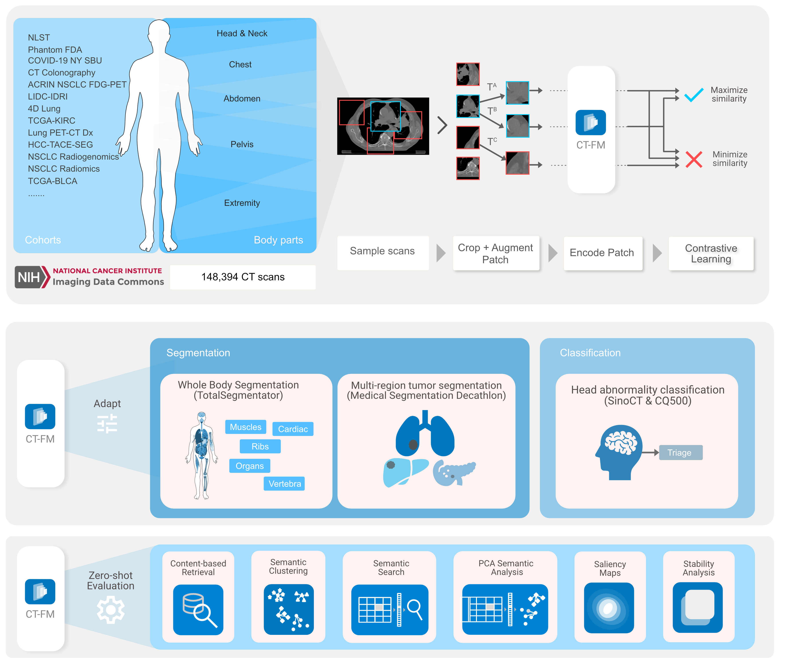

CT-FM: A 3D Image-Based Foundation Model for Radiological Tasks

Introduction
This repository contains the code and resources for CT-FM, a 3D image-based pre-trained foundation model designed for various radiological tasks. CT-FM is trained using self-supervised learning (SSL) on a large dataset of 148,000 CT scans. This model aims to address a range of tasks, including whole-body segmentation, tumor segmentation, head CT triage, and medical image retrieval. This work builds upon previous efforts in radiological AI, shifting from task-specific expert models to unified foundation models for broader adaptability and efficiency.
Key Innovations
- Large-Scale 3D Pretraining: Emphasis on 3D data rather than traditional 2D datasets.
- Task-Agnostic Training: Enabling transferability across various radiological tasks.
- Open Source: Model weights, data, and code are shared for collaborative development.
Results
CT-FM has been evaluated on several downstream tasks, demonstrating strong performance:
-
Whole-Body Segmentation
- Evaluated on the TotalSegmentator dataset (117 anatomical labels across 1,228 scans).
- Achieved a mean Dice coefficient of 0.898, outperforming baseline and SuPREM models on most anatomical regions. Note that nnUnet showed better results due to multi-fold cross-validation and ensemble strategies, which CT-FM didn’t employ.
-
Cancer Tumor Segmentation
- Benchmarked on the Medical Segmentation Decathlon dataset for lung, hepatic, and pancreatic tumors.
- Demonstrated improved Dice scores and Average Surface Distance (ASD) in segmentation tasks for lung and hepatic tumors. For pancreatic tumors, ASD improvements were noted despite comparable Dice scores to baselines.
-
Head CT Triage
- Evaluated on SinoCT (9,000 scans) and CQ500 (491 scans) datasets for normal/abnormal classification.
- Achieved an F1 score of 0.776 on SinoCT and 0.754 on CQ500, surpassing random baselines but slightly underperforming the SuPREM model in some metrics.
-
Medical Image Retrieval
- Tested on OrganMNIST3D and 3D-MIR datasets.
- Outperformed baselines in retrieving scans with similar anatomical regions and lesion characteristics. Achieved top precision scores in lesion-based retrieval tasks.
-
Anatomical Clustering and Semantic Search
- Showed inherent clustering of anatomical features in embedding space.
- Facilitated fine-grained semantic searches, linking specific anatomical regions across scans.
-
Stability and Robustness
- Demonstrated consistent performance across test-retest datasets, showcasing robustness to variations in acquisition parameters.
Methods
Pretraining Strategy
CT-FM is pre-trained using a modified SimCLR framework for self-supervised learning:
- Intra-sample Contrastive Learning: Focuses on patches within the same sample to learn spatial semantics.
- Augmentation Strategies: Utilizes augmentations like random cropping, histogram shifting, and intensity scaling.
- Pretraining Details: Pretrained for 500 epochs on 148,000 CT scans, selecting the best checkpoint at epoch 449.
- Architecture Details: Uses a convolutional vision encoder, SegResEncoder with 77M params
Fine-tuning for Downstream Tasks
-
Segmentation:
- Plugs the pretrained SegResEncoder into SegResNetDS and trains with Dice score and cross-entropy loss.
- Trained for 300 epochs with augmentations like affine transformations and Gaussian noise.
- Works both with project-lighter pipelines as well as established frameworks like Auto3DSeg
-
Classification:
- Implemented using SegResEncoder as the backbone + MLP, optimized with Binary Cross-Entropy loss.
- Preprocessing includes windowing levels specific to CT scan features (blood, subdural, stroke, bone).
-
Retrieval:
- Embeddings generated for training data were compared using cosine similarity for retrieval tasks.